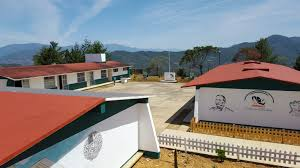
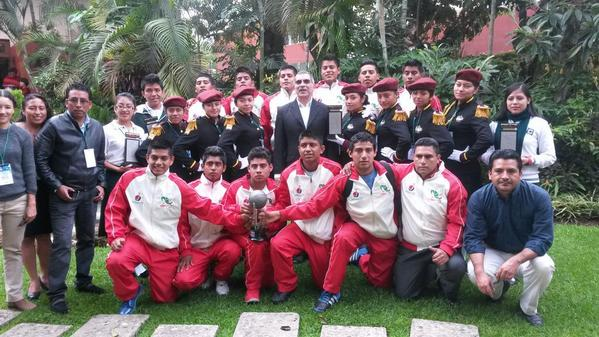

¡Forma Tu Futuro Con Nosotros!
Descubre las oportunidades educativas que el CECyTE Oaxaca EMSAD-59 tiene para ti.
Consulta la Convocatoria de AdmisiónConvocatoria de Admisión
Información importante sobre el proceso de admisión para el ciclo escolar [2025-2026].
- Fechas Importantes: 18 de agosto
- Requisitos: Certificado de Secundaria, Curp, Carta de Buena Conducta, Certificado Medico
- Proceso de Registro
- Preguntas Frecuentes
¿Por Qué Elegir CECyTE?
- Calidad educativa enfocada en el desarrollo de competencias.
- Programas técnicos con alta demanda en el sector productivo.
- Dedicacion de nuestros docentes para brindarte una mejor educacion
Conocenos


Proceso de Admisión Paso a Paso
- Registro en línea.
- Entrega de documentos.
- Inscripción.
- Curso de Induccion
Contacto
Para más información, contáctanos:
Teléfono: 951 2165854
Correo Electrónico: emsad59@cecyteo.edu.mx